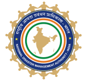
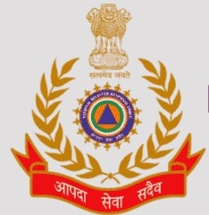
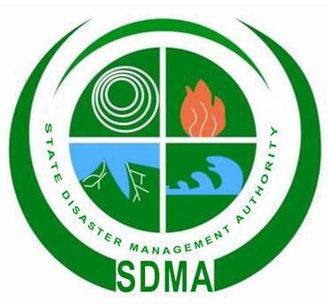
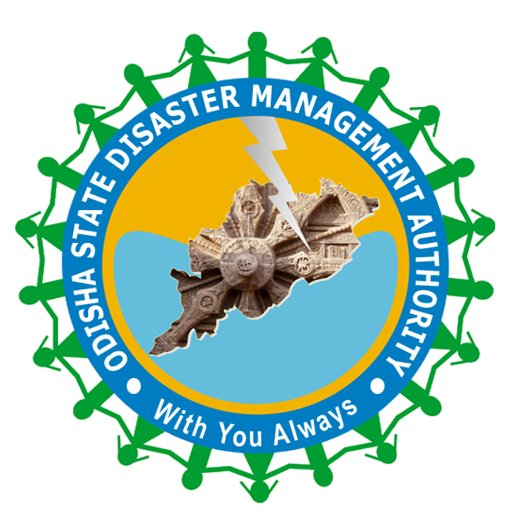

Disaster management plays a crucial role in protecting lives, safeguarding infrastructure,
and promoting sustainable development.
Here are several key reasons why disaster management is important:
Effective disaster management helps minimize casualties by providing timely warnings, evacuation procedures, and emergency response services during disasters. It ensures that people are prepared to cope with emergencies, reducing the loss of life.
Disasters can cause significant damage to infrastructure, homes, businesses, and agriculture, leading to economic setbacks. Disaster management aims to mitigate these losses by implementing measures to strengthen infrastructure, enhance resilience, and promote risk reduction strategies.
By identifying and addressing vulnerabilities in infrastructure and critical facilities, disaster management efforts help protect essential services such as transportation, communication, water supply, and energy distribution networks.
Integrating disaster risk reduction into development planning promotes sustainable practices. By considering disaster risks in land use planning, building codes, and environmental management, communities can reduce vulnerability and enhance resilience to disasters.
Disaster management includes planning for business continuity and ensuring the uninterrupted delivery of essential services such as healthcare, education, and public safety during and after disasters.
Disaster management fosters community resilience by empowering individuals, communities, and organizations to prepare for, respond to, and recover from disasters. It strengthens social cohesion, fosters collaboration, and builds trust among stakeholders.
Disasters can have significant environmental impacts, including pollution, habitat destruction, and ecosystem degradation. Disaster management promotes environmentally sustainable practices and integrates environmental considerations into disaster risk reduction efforts.
Climate change is exacerbating the frequency and intensity of many types of disasters. Disaster management strategies incorporate climate adaptation measures to address these challenges effectively.
Comprehensive disaster management plans enable coordinated responses to emergencies, facilitating rapid recovery and rehabilitation efforts.
Disaster management fosters collaboration and cooperation among national governments, local authorities, civil society organizations, and international agencies.
The NDMA is the apex body for disaster management in India...
The NDRF is a specialized force established for disaster response, rescue, relief, and recovery operations...
NIDM is an apex national institute for training and capacity development...
SDMA is established at the state level to oversee and coordinate disaster management efforts within the respective state...
Established after the 1999 supercyclone, the OSDMA focuses on capacity building and disaster resiliency...

112: Unified national emergency number
108: National Ambulance Service
1070: State Control Room
1077: State Disaster Management helpline
1078: NDMA helpline
100: Police Control Room
101: Fire
102: Ambulance
040-23202113: Collectorate
08297739999: Disaster Management (Hyderabad District)
Dial 112 from your phone
Press the power button 3 times for panic call
Long press 5 or 9 on feature phone
Use 112 India Mobile App to connect to ERC
A cloudburst and glacier melt led to devastating floods in Uttarakhand causing massive loss of life and property.
Read moreHeavy rainfall from a cloudburst caused flash floods in Leh damaging many houses and infrastructure.
Read moreUrban flooding due to the heaviest rainfall in a century highlighted infrastructure and preparedness challenges.
Read moreMassive floods following unusually high monsoon rainfall caused widespread devastation and displacement.
Read moreThis intraplate earthquake caused nearly 10,000 deaths and exposed weaknesses in preparedness and response.
Read moreThe collapse of Bhuj Civil Hospital and massive destruction revealed critical shortcomings in construction and disaster management.
Read moreA devastating earthquake with widespread damage and loss of life, highlighting regional seismic risks.
Read moreA chemical leak tragedy that caused thousands of immediate deaths, long-term health impacts, and industrial safety reforms.
Read moreCoordinated attacks on local trains exposed challenges in urban security and emergency response.
Read more